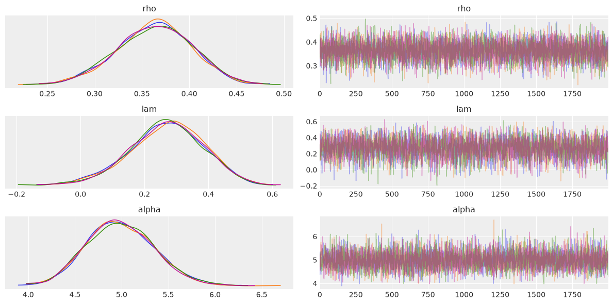
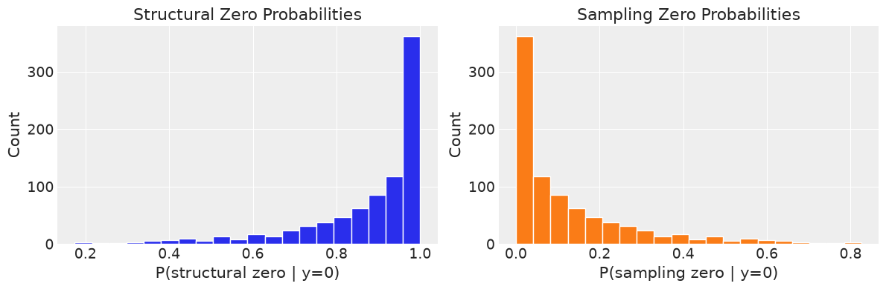
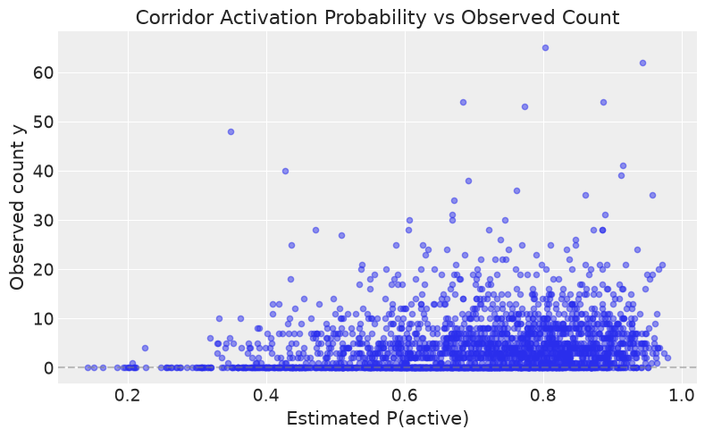
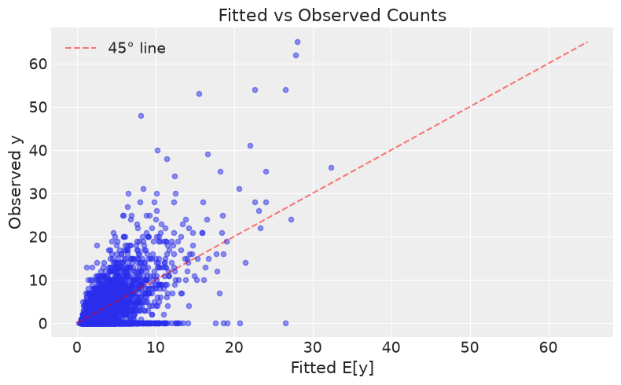
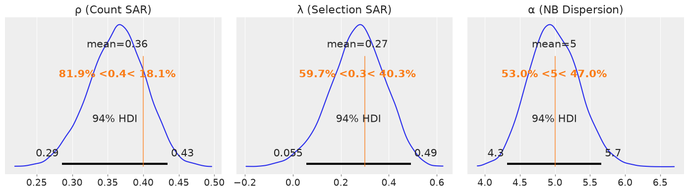

How to fit zero-inflated SAR negative binomial models¶
Count data with more zeros than a negative binomial can account for, where the
excess zeros come from a separate process — corridors that are inactive
altogether, not merely low-intensity. SARZINB fits the selection and count
equations jointly, each with its own spatial structure and its own weights
matrix, and decomposes the observed zeros between the two.
It is Gibbs-only. Equations and constructor arguments are in Supported Models.
Important
Check that you need zero inflation Excess zeros are often ordinary count zeros from a small mean, not a separate process — Santos Silva & Tenreyro (2011) argue exactly this for trade flows. Fit a plain negative binomial first and compare before reaching for this model.
import arviz as az
import matplotlib.pyplot as plt
import numpy as np
from neighbayes.dgp import simulate_sar_zinb
from neighbayes.models import SARZINB
az.style.use("arviz-darkgrid")
plt.rcParams["figure.figsize"] = (10, 6)
/home/runner/micromamba/envs/test/lib/python3.14/site-packages/tqdm/auto.py:21: TqdmWarning: IProgress not found. Please update jupyter and ipywidgets. See https://ipywidgets.readthedocs.io/en/stable/user_install.html
from .autonotebook import tqdm as notebook_tqdm
Simulate a known process¶
The simulate_sar_zinb function generates data from a two-equation spatial model:
Selection: SAR-logit with parameter λ and covariates Z
Count: Reduced-form SAR-NB with parameter ρ, covariates X, and dispersion α
We use a 50×50 grid (2500 observations) for a demo.
# Simulate data from the ZINB DGP
# Use n=50 (50x50 grid → 2500 observations) for reliable parameter recovery.
# Spatial parameters (ρ, λ) require n ≥ 900 for reliable recovery in
# cross-sectional count models. The model raises a UserWarning when n < 900.
data = simulate_sar_zinb(
n=50, # 50x50 grid → 2500 observations
rho=0.4, # Count SAR parameter
lam=0.3, # Selection SAR parameter
alpha=5.0, # NB dispersion (larger = less overdispersion)
beta=np.array([1.0, 0.6]), # Count coefficients [intercept, slope]
gamma=np.array([0.3, 1.0]), # Selection coefficients [intercept, slope]
target_pi=0.7, # Target corridor activation probability
seed=42,
)
y = data["y"]
X = data["X"]
Z = data["Z"]
W_graph = data["W_graph"]
W_sel_graph = data["W_sel_graph"]
print(f"Observations: {len(y)}")
print(f"Zero fraction: {(y == 0).mean():.2%}")
print(f"Mean (y>0): {y[y > 0].mean():.1f}")
print(f"Max: {y.max():.0f}")
print("\nTrue parameters:")
print(f" ρ (count SAR): {data['params_true']['rho']}")
print(f" λ (sel SAR): {data['params_true']['lam']}")
print(f" α (dispersion): {data['params_true']['alpha']}")
print(f" β (count coef): {data['params_true']['beta']}")
print(f" γ (sel coef): {data['params_true']['gamma']}")
Observations: 2500
Zero fraction: 33.92%
Mean (y>0): 6.6
Max: 65
True parameters:
ρ (count SAR): 0.4
λ (sel SAR): 0.3
α (dispersion): 5.0
β (count coef): [1. 0.6]
γ (sel coef): [0.99612844 1. ]
Fit the model¶
The SARZINB model class accepts:
y: non-negative integer countsX: count covariate matrixZ: selection covariate matrix (defaults toXif not provided)W: spatial weights for the count equationW_sel: spatial weights for the selection equation (defaults toW)
The fit() method runs a 9-block Gibbs sampler with profile-log-likelihood initialisation.
# Create and fit the ZINB-SAR model
model = SARZINB(
y=y,
X=X,
Z=Z,
W=W_graph,
W_sel=W_sel_graph,
)
idata = model.fit(
draws=2000,
tune=1000,
chains=4,
random_seed=123,
n_jobs=-1,
progressbar=True,
)
Gibbs sampling (zinb_sar): 4 chains for 1,000 tune and 2,000 draw iterations (4 x 3,000 = 12,000 draws total)
/home/runner/micromamba/envs/test/lib/python3.14/site-packages/rich/live.py:260: UserWarning: install "ipywidgets"
for Jupyter support
warnings.warn('install "ipywidgets" for Jupyter support')
Sampling took 150s (80 draws/s)
Read the two equations separately¶
Compare posterior means to the true parameter values used in the DGP.
# Posterior summary
summary = az.summary(idata, var_names=["rho", "lam", "alpha", "beta", "gamma"])
print(summary)
# Compare with true values
print("\n--- Parameter Recovery ---")
print(
f"ρ (count SAR): true={data['params_true']['rho']:.2f}, "
f"posterior mean={float(idata.posterior['rho'].mean()):.3f} "
f"± {float(idata.posterior['rho'].std()):.3f}"
)
print(
f"λ (sel SAR): true={data['params_true']['lam']:.2f}, "
f"posterior mean={float(idata.posterior['lam'].mean()):.3f} "
f"± {float(idata.posterior['lam'].std()):.3f}"
)
print(
f"α (dispersion): true={data['params_true']['alpha']:.2f}, "
f"posterior mean={float(idata.posterior['alpha'].mean()):.3f} "
f"± {float(idata.posterior['alpha'].std()):.3f}"
)
# Note: spatial parameters (ρ, λ) require large samples (n ≥ 900)
# for reliable recovery in cross-sectional count models. The posterior
# is typically wide and may be attenuated toward zero at moderate n.
# The model raises a UserWarning when n < 900.
mean sd hdi_3% hdi_97% mcse_mean mcse_sd ess_bulk \
rho 0.363 0.040 0.286 0.434 0.001 0.000 6254.0
lam 0.269 0.116 0.055 0.491 0.002 0.001 3688.0
alpha 4.988 0.362 4.320 5.661 0.005 0.004 5430.0
beta[x0] 1.064 0.066 0.942 1.190 0.001 0.001 6029.0
beta[x1] 0.599 0.017 0.567 0.632 0.000 0.000 5029.0
gamma[z0] 0.718 0.122 0.505 0.956 0.002 0.001 3716.0
gamma[z1] 0.810 0.063 0.695 0.930 0.001 0.001 2794.0
ess_tail r_hat
rho 5610.0 1.0
lam 4774.0 1.0
alpha 5724.0 1.0
beta[x0] 5650.0 1.0
beta[x1] 6827.0 1.0
gamma[z0] 4823.0 1.0
gamma[z1] 4707.0 1.0
--- Parameter Recovery ---
ρ (count SAR): true=0.40, posterior mean=0.363 ± 0.040
λ (sel SAR): true=0.30, posterior mean=0.269 ± 0.116
α (dispersion): true=5.00, posterior mean=4.988 ± 0.362
What to check before trusting the output¶
Check R-hat and effective sample sizes to verify MCMC convergence.
# Convergence diagnostics
az.plot_trace(idata, var_names=["rho", "lam", "alpha"], compact=False)
plt.tight_layout()
plt.show()
# R-hat and ESS
diagnostics = az.summary(idata, var_names=["rho", "lam", "alpha"])
print(diagnostics[["r_hat", "ess_bulk", "ess_tail"]])
/tmp/ipykernel_6724/1873529208.py:3: UserWarning: The figure layout has changed to tight
plt.tight_layout()

r_hat ess_bulk ess_tail
rho 1.0 6254.0 5610.0
lam 1.0 3688.0 4774.0
alpha 1.0 5430.0 5724.0
Split the zeros between the two processes¶
The ZINB model decomposes observed zeros into two types:
Structural zeros: the observation is inactive (d=0)
Sampling zeros: the observation is active (d=1) but the NB draw was zero
The zero_attribution() method computes the posterior probability of each type for every zero observation.
# Zero attribution
attribution = model.zero_attribution()
print(f"Number of zero observations: {len(attribution['zero_indices'])}")
print(f"\nMean P(structural | y=0): {attribution['structural_prob'].mean():.3f}")
print(f"Mean P(sampling | y=0): {attribution['sampling_prob'].mean():.3f}")
# Histogram of structural zero probabilities
fig, ax = plt.subplots(1, 2, figsize=(12, 4))
ax[0].hist(attribution["structural_prob"], bins=20, edgecolor="white")
ax[0].set_xlabel("P(structural zero | y=0)")
ax[0].set_ylabel("Count")
ax[0].set_title("Structural Zero Probabilities")
ax[1].hist(attribution["sampling_prob"], bins=20, edgecolor="white", color="C1")
ax[1].set_xlabel("P(sampling zero | y=0)")
ax[1].set_ylabel("Count")
ax[1].set_title("Sampling Zero Probabilities")
plt.tight_layout()
plt.show()
Number of zero observations: 848
Mean P(structural | y=0): 0.877
Mean P(sampling | y=0): 0.123
/tmp/ipykernel_6724/1143200135.py:19: UserWarning: The figure layout has changed to tight
plt.tight_layout()

Get per-observation activation probabilities¶
The corridor_probabilities() method returns the posterior-mean probability that each observation is “active” (i.e., in the count regime rather than the always-zero regime).
# Corridor activation probabilities
pi = model.corridor_probabilities()
print(f"Mean corridor probability: {pi.mean():.3f}")
print(f"Min corridor probability: {pi.min():.3f}")
print(f"Max corridor probability: {pi.max():.3f}")
# Compare with true d
d_true = data["d"]
print(f"\nTrue activation rate: {d_true.mean():.3f}")
print(f"Estimated activation rate: {pi.mean():.3f}")
# Scatter: pi vs observed y
fig, ax = plt.subplots(figsize=(8, 5))
ax.scatter(pi, y, alpha=0.5, s=20)
ax.set_xlabel("Estimated P(active)")
ax.set_ylabel("Observed count y")
ax.set_title("Corridor Activation Probability vs Observed Count")
ax.axhline(0, color="grey", linestyle="--", alpha=0.5)
plt.tight_layout()
plt.show()
Mean corridor probability: 0.703
Min corridor probability: 0.142
Max corridor probability: 0.980
True activation rate: 0.704
Estimated activation rate: 0.703
/tmp/ipykernel_6724/1500508181.py:20: UserWarning: The figure layout has changed to tight
plt.tight_layout()

Predict expected counts¶
The fitted_values() method returns E[y_i] = π_i · exp(η_i^cnt), the posterior-mean expected count for each observation.
# Fitted mean counts
fitted = model.fitted_values()
print(f"Mean fitted count: {fitted.mean():.2f}")
print(f"Mean observed count: {y.mean():.2f}")
# Scatter: fitted vs observed
fig, ax = plt.subplots(figsize=(8, 5))
ax.scatter(fitted, y, alpha=0.5, s=20)
ax.plot(
[0, max(y.max(), fitted.max())],
[0, max(y.max(), fitted.max())],
"r--",
alpha=0.5,
label="45° line",
)
ax.set_xlabel("Fitted E[y]")
ax.set_ylabel("Observed y")
ax.set_title("Fitted vs Observed Counts")
ax.legend()
plt.tight_layout()
plt.show()
Mean fitted count: 4.40
Mean observed count: 4.39
/tmp/ipykernel_6724/2483833273.py:21: UserWarning: The figure layout has changed to tight
plt.tight_layout()

Inspect the posteriors¶
Visualize the posterior distributions of the spatial parameters ρ and λ, and the NB dispersion α, with true values marked.
# Posterior distributions with true values
fig, axes = plt.subplots(1, 3, figsize=(14, 4))
# ρ (count SAR)
az.plot_posterior(
idata, var_names=["rho"], ref_val=data["params_true"]["rho"], ax=axes[0]
)
axes[0].set_title("ρ (Count SAR)")
# λ (selection SAR)
az.plot_posterior(
idata, var_names=["lam"], ref_val=data["params_true"]["lam"], ax=axes[1]
)
axes[1].set_title("λ (Selection SAR)")
# α (NB dispersion)
az.plot_posterior(
idata, var_names=["alpha"], ref_val=data["params_true"]["alpha"], ax=axes[2]
)
axes[2].set_title("α (NB Dispersion)")
plt.tight_layout()
plt.show()
# Note: spatial parameters (ρ, λ) require large samples (n ≥ 900)
# for reliable recovery in cross-sectional count models. The posterior
# is typically wide and may be attenuated toward zero at moderate n.
findfont: Failed to find font weight semibold, now using 700.
/tmp/ipykernel_6724/297505054.py:22: UserWarning: The figure layout has changed to tight
plt.tight_layout()

See also¶
How to estimate spatial negative binomial models — fit this first and compare before assuming zero inflation
How to estimate Poisson origin–destination flow models — the flow-data version of the same question
Supported Models —
SARZINBequations and arguments